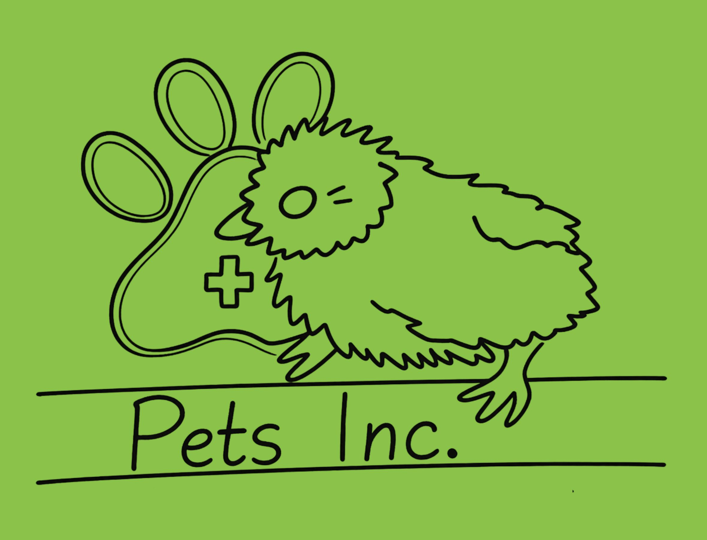

| ID | Nombre | Cédula | Especialidad | Teléfono | Consultorio | Horario | Disponibilidad |
|---|---|---|---|---|---|---|---|
| 10 | Armando Luna | 7482910 | Imagenología | 555-019-2837 | 1 | 09:15 - 13:15 | Lunes-Viernes |
| 20 | Patricia Solís | 1092837 | Anestesiología | 555-019-4455 | 2 | 09:15 - 13:15 | Viernes-Domingo |
| 30 | Javier Ortega | 5564785 | Cirugía | 555-015-6789 | 3 | 10:30 - 15:30 | Viernes-Domingo |
| 40 | Patricia Rivas | 8872364 | Neurología | 555-618-3321 | 4 | 13:00 - 19:00 | Lunes-Viernes |
| 50 | Adolfo Becerra | 3319281 | Cirugía | 555-011-9900 | 5 | 13:00 - 21:00 | Viernes-Domingo |
| 60 | Martha Esquivel | 901128 | Oncología | 555-014-5566 | 6 | 13:00 - 21:00 | Viernes-Domingo |
| 70 | Alejandro Moreno | 4455667 | Anestesiología | 555-017-1122 | 2 | 15:20 - 20:15 | Lunes-Viernes |
| 80 | Natalia Duarte | 2288119 | Imagenología | 555-016-2277 | 3 | 17:40 - 20:15 | Lunes-Viernes |
| 90 | Victoria Zuñiga | 6677889 | Dermatología | 555-010-6633 | 4 | 20:15 - 04:00 | Lunes-Viernes |
| 010 | Ramón Valdez | 7482910 | Imagenología | 555-109-3384 | 1 | 04:00 - 09:15 | Lunes-Viernes |